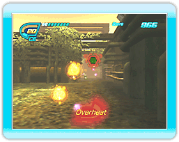

9 |
How to Play |
 |
The goal in Eco Shooter: Plant 530 is to clear each level with the highest score possible. Earn points by shooting cans while traveling on a pre-determined path. Destroyed cans will turn into Can Energy. Vacuum up the Can Energy to replenish your ammo. If you run out of Can Energy, the game is over. Any remaining Can Energy at the end of the stage will be converted to points and added to your score.
● Can Energy
As a general rule, cans that are more difficult to hit produce more Can Energy when destroyed. ● Vacuum Can Energy can be recovered by using the vacuum function of the recycle cannon. Press and hold to start the vacuum. If you release while pointing at Can Energy, that Can Energy will be vacuumed into the recycle cannon and stored as ammo. The recycle cannon’s vacuum can only be used for a limited amount of time before it overheats. If the vacuum overheats, it cannot be used until it has cooled off completely. The vacuum will cool off anytime it is not in use. |
 |
 |